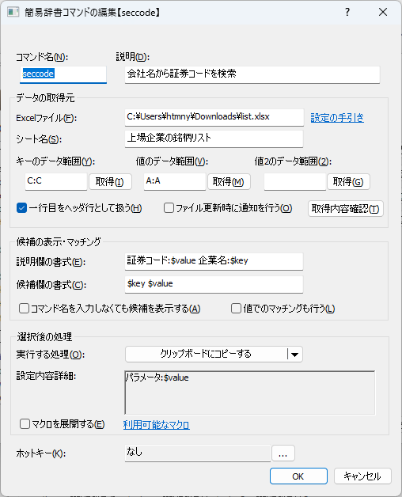
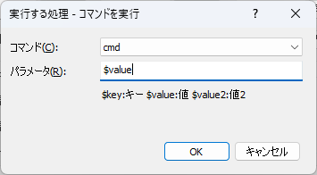
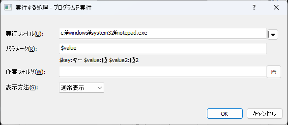
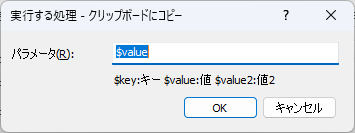
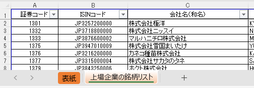
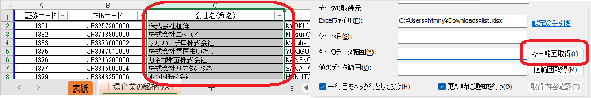
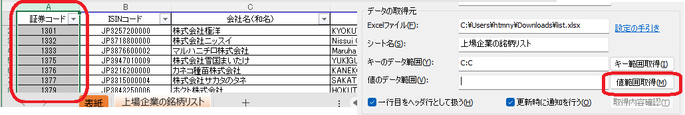
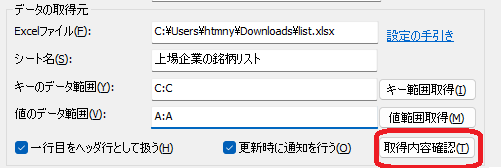
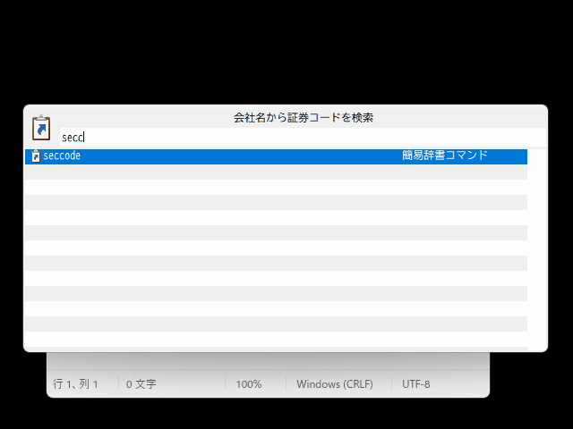

簡易辞書コマンド
Excelワークブックファイル(*.xlsx,*.xls)の任意の範囲のデータを簡易的な辞書データ(キーと値のペアの集合)として利用するコマンド。
辞書データ(キー、値)をインクリメンタルに検索することができる。
Excelファイルをデータソースにできるので、データのメンテナンスをExcelでお手軽にできるのがメリット
Excelを利用するため、実行環境にExcelがインストールされている必要がある。
用途・活用例
お使いの環境(組織)にて使われる、何らかの対応表の相互変換
Excelで台帳管理されているものがあれば、それをそのままデータソースとして活用できる可能性がある
あるいはPowerQueryを使って、加工したうえで使うとか...
製品開発の現場における、製品の正式名称(外向け)と開発名称(内向け)の相互変換とか
(定型文グループコマンドと被るが)定型文をExcelで管理して、定型文として呼び出すような使い方ができる
定型文に対して任意の名前を付けて、名前で定型文を呼び出す、みたいな
その他、一般的な変換
例: 郵便番号と地名、MACアドレスとベンダー、企業名と企業コード
設定画面

コマンド名入力画面からコマンドを実行するためのキーワード
説明何のためのコマンドかを記載しておくための説明欄
データの取得元Excelファイル辞書データとして利用したいExcelワークブックファイルのパスを指定する
シート名辞書データとして利用したいデータを含むシート名を指定する
キーのデータ範囲辞書データの「キー」として利用したいデータの範囲を指定する
取得クリックすると、現在Excelで表示・選択している範囲の情報を、
Excelファイル、シート名、キーのデータ範囲に反映する
値のデータ範囲辞書データの「値」として利用したいデータの範囲を指定する
取得クリックすると、現在Excelで表示・選択している範囲の情報を、
Excelファイル、シート名、値のデータ範囲に反映する
値2のデータ範囲辞書データの「値2」として利用したいデータの範囲を指定する
値2は補助用の領域。設定は任意。
取得クリックすると、現在Excelで表示・選択している範囲の情報を、
Excelファイル、シート名、値のデータ範囲に反映する
一行目をヘッダ行として扱うチェックすると、選択範囲の先頭行をヘッダとみなし、辞書データに含めない
ファイル更新時に通知を行うチェックすると、
Excelファイルで指定したファイルが更新されたときに、トースト通知するファイルサーバ上で他の人と共有しているExcelファイルを使っている場合に、他者によるファイル更新に気づくことができる
ただし、ファイルがURL経由である場合は更新検知できない
取得内容確認クリックすると、
Excelファイル/シート名/キーのデータ範囲/値のデータ範囲の内容に基づいて辞書データを読み込み、プレビュー欄に表示する
候補の表示・マッチング説明欄の書式候補を選択したときに説明欄に表示するテキストの書式を設定する
候補欄の書式候補欄に表示するテキストの書式を設定する
コマンド名を入力しなくても候補を表示するチェックすると、コマンド名を入力しなくても、入力ワードにマッチする値を候補欄に表示する
この場合弱一致扱いとなる
値でのマッチングも行うチェックすると、キーと値を逆転したマッチングを有効にする(値でマッチングし、キーを結果とする）
選択後の処理実行する処理
選択後に実行する処理の実行方法を選択する
以下の3つから選ぶことができる他のコマンドを実行する他のプログラムを実行するクリップボードにコピーする
マクロを展開するコマンド実行時にマクロを展開する
なお、逆引き検索でヒットした場合、$keyと$valueも逆になる
ホットキーコマンドを呼び出すキーバインドを設定できる。
設定したキーを押下すると、入力欄が表示され、コマンド名が入力された(キーワードで絞り込みができる）状態になる他のコマンドにおけるホットキーはコマンド実行として作用するが、このコマンドに関しては短縮入力みたいな位置づけ
実行する処理 - 他のコマンドを実行する

コマンド実行するコマンドを選択する
パラメータコマンドに渡すパラメータを指定する
実行する処理 - プログラムを実行する

実行ファイル実行するプログラムのパスを指定する
パラメータプログラムに渡すパラメータを指定する
作業フォルダ実行するときのカレントディレクトリを指定する
表示方法通常表示/最大表示/最小表示 を選ぶことができる
起動するプログラムによっては指定が効かないこともある
実行する処理 - クリップボードにコピーする

パラメータクリップボードにコピーするテキストの書式を指定する
設定の手引き
Excelアプリケーションを起動し、辞書として利用したいワークシートを選択しておく
Excel側でキーとして使うセル範囲を選択する。次に、本アプリ側でキー範囲取得ボタンを押す
Excel側で値として使うセル範囲を選択する。次に、本アプリ側で値範囲取得ボタンを押す
取得内容確認ボタンを押下し、取得されるキーと値の内容を確認する
キーと値の内容に問題なければ、
選択後の処理の設定をして、OKボタンを押下してコマンドを作成する
動作の説明
アプリ起動後にバックグラウンドで辞書データの読み込みを行う
読み込みが完了するまでは候補に表示されない
データソースとなるExcelファイルが更新された場合、自動で再読み込みを行う
制限事項
クエリのタイムアウトを100msecとしている
設定したデータの規模によっては検索に時間がかかる可能性があり、操作性に影響する可能性があるため
表示する候補の上限は20件
これも操作性への影響を考慮して件数を絞っている
最終的にはキーワード入力で1件に絞り込むので途中の候補としては20件もあれば足りるでしょう、という考え
例
日本の上場企業の会社名をキー、証券コードを値にする
{kind=link}
「せいてつ」というキーワードで会社名での絞り込みを行い、証券コードをクリップボードにコピーする 
実行時の動作
押下キー |
動作 |
|---|---|
|
コマンド設定画面で指定したアクションを実行する |
|
キーをコピー |
|
値をコピー |